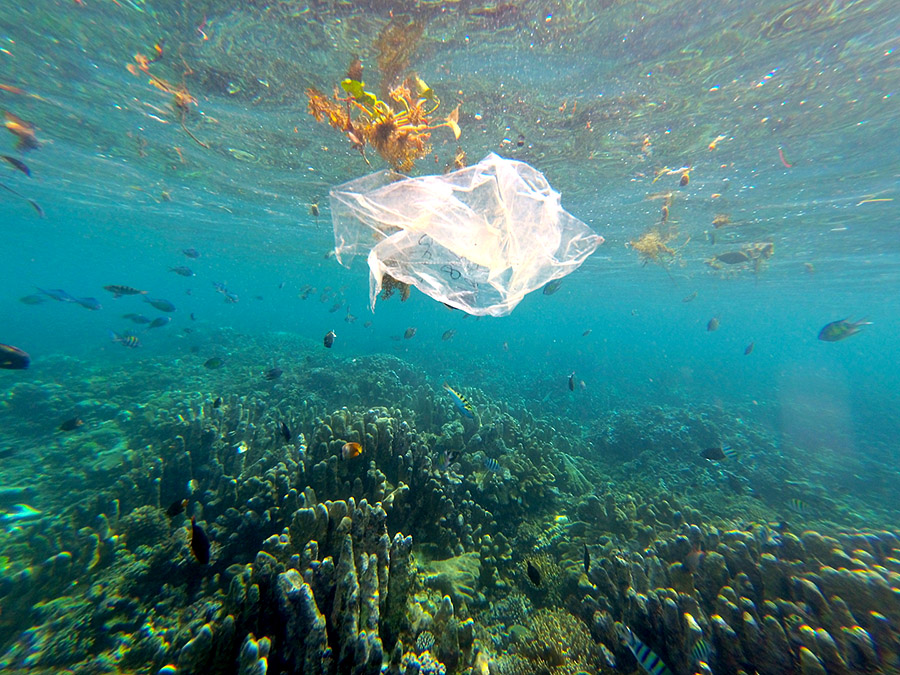
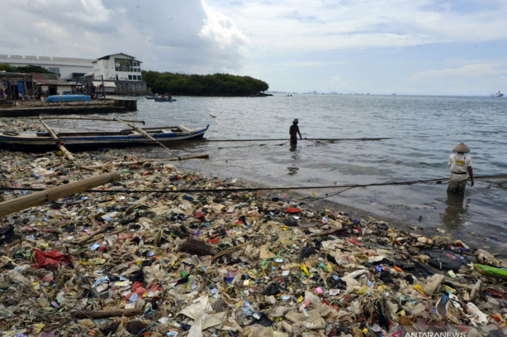
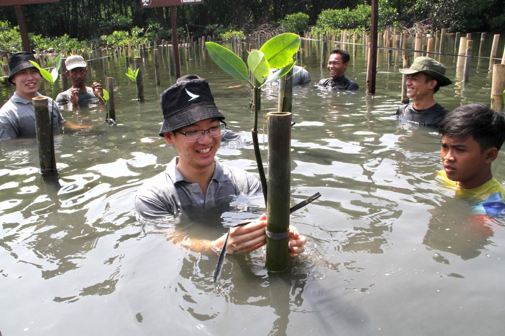
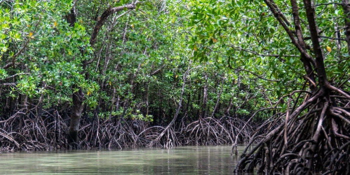
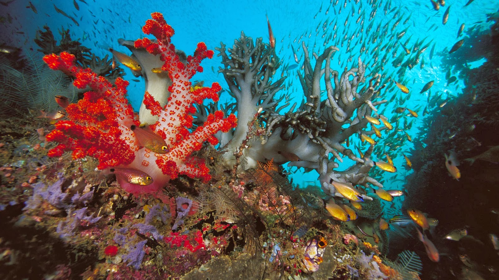

Menjaga Pesisir, Melindungi Kehidupan
Laut dan pantai bukan sekadar bentang alam, melainkan bagian penting dari kehidupan yang menopang keanekaragaman hayati dan masyarakat pesisir. Namun, pencemaran, kerusakan habitat, dan perubahan iklim menjadi tantangan bagi kelestariannya. Mengenali permasalahan ini merupakan langkah awal untuk memahami pentingnya konservasi laut dan pantai.
Jelajahi Edukasi01. Pencemaran Laut

Pencemaran laut terjadi ketika sampah atau zat pencemar masuk ke lingkungan perairan dan mengganggu keseimbangan ekosistem. Sumber pencemaran dapat berasal dari aktivitas di daratan maupun di laut. Pengelolaan sampah yang baik dan pencegahan pencemaran diperlukan untuk melindungi kualitas perairan serta kehidupan biota laut.
02. Sampah Pantai

Sampah di pantai dapat berasal dari kegiatan pengunjung, aktivitas pesisir, serta sampah yang terbawa aliran sungai dan arus laut. Jika tidak dikelola dengan baik, sampah dapat mengganggu satwa, merusak keindahan pantai, dan menambah beban pengelolaan lingkungan.
Dalam artikel Kementerian Kelautan dan Perikanan, program Laut Sehat Bebas Sampah (Laut Sebasah) diperkenalkan sebagai upaya pengurangan sampah laut melalui pendekatan dari hulu hingga hilir dan kolaborasi berbagai pihak.
03. Rehabilitasi Mangrove

Hutan mangrove merupakan ekosistem pesisir yang menyediakan habitat bagi berbagai organisme dan membantu melindungi garis pantai dari erosi. Kerusakan habitat mangrove dapat mengurangi fungsi ekologis tersebut.
Rehabilitasi mangrove bertujuan memulihkan ekosistem yang mengalami kerusakan. Upaya ini perlu mempertimbangkan kondisi lingkungan, kesesuaian jenis mangrove, serta pemeliharaan setelah penanaman agar pemulihan dapat berlangsung secara berkelanjutan.
04. Mengenal Ekosistem Pesisir

Ekosistem pesisir mencakup beragam habitat, seperti hutan mangrove, padang lamun, pantai, dan terumbu karang. Setiap habitat memiliki karakteristik dan fungsi yang berbeda, tetapi semuanya saling berhubungan dalam mendukung kehidupan di wilayah pesisir dan laut.
Kerusakan pada satu habitat dapat memengaruhi organisme dan keseimbangan lingkungan di sekitarnya. Karena itu, konservasi pesisir perlu memperhatikan keterkaitan antarekosistem, bukan hanya melindungi satu kawasan.
05. Keanekaragaman Hayati Laut

Laut menjadi habitat bagi beragam organisme, mulai dari plankton dan terumbu karang hingga ikan, penyu, dan mamalia laut. Keanekaragaman hayati ini berperan dalam menjaga keseimbangan ekosistem dan mendukung kehidupan manusia.
Pencemaran, kerusakan habitat, dan eksploitasi sumber daya yang tidak berkelanjutan dapat mengancam keberadaan berbagai spesies. Perlindungan habitat serta pemanfaatan sumber daya laut secara bertanggung jawab menjadi bagian penting dari upaya konservasi.
Konservasi untuk Masa Depan
Perubahan iklim dapat meningkatkan risiko bagi wilayah pesisir melalui kenaikan permukaan laut dan perubahan kondisi lingkungan. Oleh sebab itu, konservasi laut dan pantai juga perlu disertai upaya menghadapi perubahan iklim serta meningkatkan ketahanan masyarakat pesisir.
Tema JagaPesisir berkaitan dengan dua Tujuan Pembangunan Berkelanjutan, yaitu SDG 13 tentang Penanganan Perubahan Iklim dan SDG 14 tentang Ekosistem Lautan. Keduanya menekankan pentingnya tindakan untuk menghadapi risiko iklim serta melindungi dan memanfaatkan ekosistem laut secara berkelanjutan.
Fakta dan Sumber Informasi
Salah satu fakta yang disampaikan dalam artikel KKP tentang Laut Sebasah adalah bahwa studi UNEP tahun 2021 yang dikutip dalam artikel tersebut memperkirakan sekitar 80% sampah laut berasal dari daratan. Hal ini memperlihatkan pentingnya pengelolaan sampah sebelum sampah mencapai sungai, pantai, dan laut.
Untuk memahami konservasi laut dan kaitannya dengan pembangunan berkelanjutan, kamu dapat membaca sumber berikut.
Mulai dari Kepedulian
Menjaga laut dan pantai tidak hanya menjadi tanggung jawab pemerintah atau komunitas konservasi. Kita juga dapat berkontribusi dengan mengurangi sampah, menjaga kebersihan pantai, menghargai habitat alami, dan mendukung kegiatan pelestarian lingkungan.
Lihat Panduan Aksi